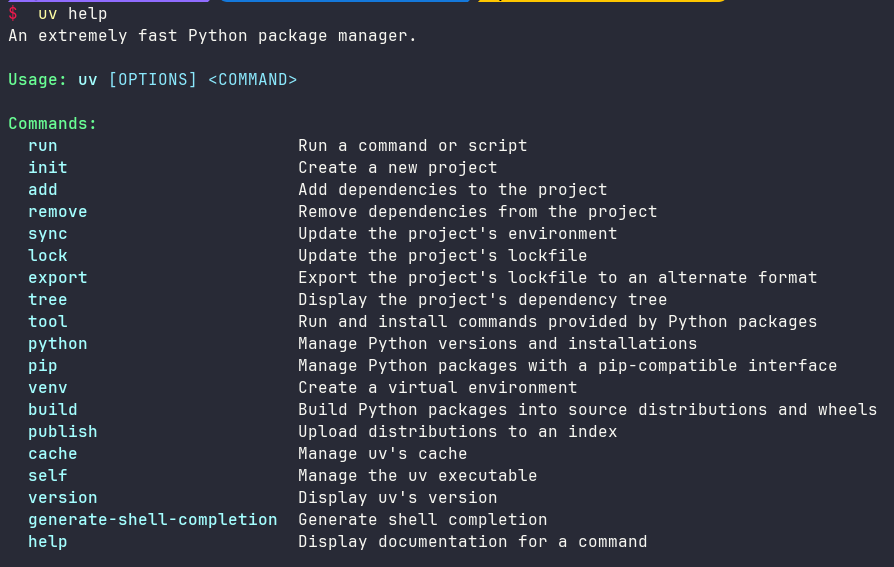

Python 包管理生态中存在多种工具，如 pip、pip-tools、poetry、conda 等，各自具备一定功能。
而今天介绍的uv 是 Astral 公司推出的一款基于 Rust 编写的 Python 包管理工具，旨在成为 “Python 的 Cargo ”。
它提供了快速、可靠且易用的包管理体验，在性能、兼容性和功能上都有出色表现，为 Python 项目的开发和管理带来了新的选择。
1. 为什么用uv 与其他Python中的包管理工具相比，uv更像是一个全能选手，它的优势在于：
速度快 ：得益于Rust，uv工具的速度让人惊艳，比如安装依赖，速度比其他工具快很多功能全面 ：uv 是“一站式服务 ”的工具，从安装 Python、管理虚拟环境，到安装和管理包，再到管理项目依赖，它统统都能处理得很好前景光明 ：背后有风投公司Astral支持，且采用了MIT许可，即使未来出现问题，社区也有应对的办法
使用uv，也可以像NodeJS或者Rust项目那样方便的管理依赖。
2. 如何安装 安装 uv 非常简单，可以使用官方提供的安装脚本，也可以通过pip来安装。
1 2 3 4 5 6 7 8 curl -LsSf https://astral.sh/uv/install.sh | sh powershell -ExecutionPolicy ByPass -c "irm https://astral.sh/uv/install.ps1 | iex" pip install uv
安装之后，可以通过uv help命令检查是否安装成功：

3. 如何使用 下面演示如何使用uv来管理Python项目。
使用uv之前，创建一个Python项目对我来说就是创建一个文件夹而已。
使用uv之后，终于有了一些项目的感觉，对于uv，我使用时间也不长，疏漏或错误的地方欢迎指正！
接下来，从创建一个项目开始，演示我使用uv时常用的一些功能。
首先，介绍uv工具主要使用的两个文件：
pyproject.toml：定义项目的主要依赖，包括项目名称、版本、描述、支持的 Python 版本等信息uv.lock：记录项目的所有依赖，包括依赖的依赖，且跨平台，确保在不同环境下安装的一致性。这个文件由 uv 自动管理，不要手动编辑
3.1. 创建项目 接下来，创建一个项目，使用uv init <project dir>命令。
1 2 3 4 5 6 7 8 9 10 11 12 13 14 15 16 17 18 $ uv init myproject Initialized project `myproject` at `D:\projects\python\myproject` $ cd .\myproject\ $ ls 目录: D:\projects\python\myproject Mode LastWriteTime Length Name ---- ------------- ------ ---- -a---- 2024/12/27 12:06:08 109 .gitignore -a---- 2024/12/27 12:06:08 5 .python-version -a---- 2024/12/27 12:06:08 87 hello.py -a---- 2024/12/27 12:06:08 155 pyproject.toml -a---- 2024/12/27 12:06:08 0 README.md
通过init创建项目之后，uv工具贴心地帮助我们生成了一些默认文件。
其中 hello.py 只是一段演示用的代码，
随后我们可以根据实际的项目需要删除这个代码文件，换成自己的实际代码。
1 2 3 4 5 6 7 $ cat .\hello.py def main(): print ("Hello from myproject!" ) if __name__ == "__main__" : main()
pyproject.toml中是一些项目信息：
1 2 3 4 5 6 7 8 $ cat .\pyproject.toml [project] name = "myproject" version = "0.1.0" description = "Add your description here" readme = "README.md" requires-python = ">=3.12" dependencies = []
注意 ，uv init 创建项目之后，会自动将项目使用Git来管理。
3.2. 操作环境 创建项目之后，我们进入项目根文件夹的第一件事就是同步项目依赖。
1 2 3 4 5 $ uv sync Using CPython 3.12.4 interpreter at: D:\miniconda3\envs\databook\python.exe Creating virtual environment at: .venv Resolved 1 package in 15ms Audited in 0.05ms
同步之后，会自动查找或下载合适的 Python 版本，创建并设置项目的虚拟环境，构建完整的依赖列表并写入
uv.lock 文件，最后将依赖同步到虚拟环境中。
我们这个是新创建的项目，没有什么依赖，所以uv.lock 文件中的内容也比较简单。
1 2 3 4 5 6 7 8 9 10 11 12 13 14 15 16 17 18 19 20 21 22 23 24 $ ls 目录: D:\projects\python\myproject Mode LastWriteTime Length Name ---- ------------- ------ ---- d----- 2024/12/27 12:12:39 .venv -a---- 2024/12/27 12:06:08 109 .gitignore -a---- 2024/12/27 12:06:08 5 .python-version -a---- 2024/12/27 12:06:08 87 hello.py -a---- 2024/12/27 12:06:08 155 pyproject.toml -a---- 2024/12/27 12:06:08 0 README.md -a---- 2024/12/27 12:12:39 116 uv.lock $ cat .\uv.lock version = 1 requires-python = ">=3.12" [[package]] name = "myproject" version = "0.1.0" source = { virtual = "." }
uv sync同步之后，就可以运行项目的代码了。
既然使用uv管理项目的话，我们就使用uv的命令来运行代码，不要像以前那样使用python xxx.py来运行。
我们可以试着运行项目创建时自动生成的代码。
1 2 $ uv run .\hello.py Hello from myproject!
3.3. 管理依赖 管理依赖是我使用uv工具的主要目的，使用uv添加依赖非常简单，和npm和cargo差不多。
1 2 3 4 5 6 7 8 9 10 $ uv add pandas Resolved 7 packages in 3.41s Prepared 6 packages in 4.63s Installed 6 packages in 1.80s + numpy==2.2.1 + pandas==2.2.3 + python-dateutil==2.9.0.post0 + pytz==2024.2 + six==1.17.0 + tzdata==2024.2
尝试安装了一个pandas依赖（pandas依赖的包也自动安装了），从上面日志可以看出速度非常快。
这时再看看uv.lock 文件的变化。
1 2 3 4 5 6 7 8 9 10 11 12 13 14 15 16 17 18 19 20 21 22 23 24 25 26 27 28 29 30 $ cat .\uv.lock version = 1 requires-python = ">=3.12" [[package]] name = "myproject" version = "0.1.0" source = { virtual = "." }dependencies = [ { name = "pandas" }, ] [package.metadata] requires-dist = [{ name = "pandas" , specifier = ">=2.2.3" }] [[package]] name = "pandas" version = "2.2.3" source = { registry = "https://pypi.org/simple" }dependencies = [ { name = "numpy" }, { name = "python-dateutil" }, { name = "pytz" }, { name = "tzdata" }, ] [[package]] name = "pytz" version = "2024.2" source = { registry = "https://pypi.org/simple" }
上面的日志中我删除了很多内容，因为整体内容太多，详细记录了每个包以及它依赖的包的情况。
uv.lock这个文件我们不要手动去编辑它，使用uv工具去管理它。
引入了pandas之后，我们看看是否可以在hello.py中使用。
1 2 3 4 5 6 7 8 9 10 11 12 13 14 15 16 17 18 19 20 21 22 23 24 $ cat .\hello.py import pandas as pd def main(): print ("Hello from myproject!" ) df = pd.DataFrame( { "A" : [1, 2, 3], "B" : [4, 5, 6], } ) print (df ) if __name__ == "__main__" : main() $ uv run .\hello.py Hello from myproject! A B 0 1 4 1 2 5 2 3 6
可以正常使用安装的包pandas，下面在试试删除依赖会怎么样。
1 2 3 4 5 6 7 8 9 10 11 12 13 14 15 16 17 18 $ uv remove pandas Resolved 1 package in 12ms Uninstalled 6 packages in 1.18s - numpy==2.2.1 - pandas==2.2.3 - python-dateutil==2.9.0.post0 - pytz==2024.2 - six==1.17.0 - tzdata==2024.2 $ cat .\uv.lock version = 1 requires-python = ">=3.12" [[package]] name = "myproject" version = "0.1.0" source = { virtual = "." }
使用uv remove命令删除pandas包之后，也会自动删除pandas依赖的其他包，
我们看到uv.lock 文件也恢复到最初的内容。
再试试运行hello.py看看。
1 2 3 4 5 $ uv run .\hello.py Traceback (most recent call last): File "D:\projects\python\myproject\hello.py" , line 1, in <module> import pandas as pd ModuleNotFoundError: No module named 'pandas'
果然，无法运行了。
3.4. 区分开发和生产环境 还有一个比较常用的功能是区分开发环境 和生产环境 的依赖，这个功能在NodeJS和Rust中很常见。
比如，我们想把pandas安装到开发环境中，而把requests安装到生产环境中。
1 2 3 4 5 6 7 8 9 10 11 12 13 14 15 16 17 18 19 $ uv add --group dev pandas Resolved 7 packages in 1.72s Installed 6 packages in 1.39s + numpy==2.2.1 + pandas==2.2.3 + python-dateutil==2.9.0.post0 + pytz==2024.2 + six==1.17.0 + tzdata==2024.2 $ uv add --group production requests Resolved 12 packages in 2.72s Prepared 5 packages in 1.31s Installed 5 packages in 68ms + certifi==2024.12.14 + charset-normalizer==3.4.1 + idna==3.10 + requests==2.32.3 + urllib3==2.3.0
安装之后，uv.lock 文件自动添加了各个包及其依赖，这里不再赘述。
从项目的pyproject.toml中可以看出不同环境的包依赖。
1 2 3 4 5 6 7 8 9 10 11 12 13 14 15 16 $ cat .\pyproject.toml [project] name = "myproject" version = "0.1.0" description = "Add your description here" readme = "README.md" requires-python = ">=3.12" dependencies = [] [dependency-groups] dev = [ "pandas>=2.2.3" , ] production = [ "requests>=2.32.3" , ]
4 切换镜像 4.5.1 修改环境变量 UV 提供了 UV_DEFAULT_INDEX 环境变量来设置默认的包索引源。
新建环境变量
4.5.2 通过配置文件修改 用户级别配置文件： windows 文件路径 ：%APPDATA%\uv\uv.toml，添加以下内容
1 2 3 [[index]] url = "https://pypi.mirrors.ustc.edu.cn/simple" default = true
linux 路径~/.config/uv/uv.toml
1 2 3 [[index]] url = "https://pypi.mirrors.ustc.edu.cn/simple" default = true
项目级别配置文件： 文件路径 ：项目目录下的 pyproject.toml 或 uv.toml
在 pyproject.toml 中添加：
1 2 3 [[tool.uv.index]] url = "https://pypi.mirrors.ustc.edu.cn/simple" default = true
或在 uv.toml 中添加：
1 2 3 [[index]] url = "https://pypi.mirrors.ustc.edu.cn/simple" default = true
4.5.3 通过命令行临时指定 在命令行中运行 UV 命令时，可以直接指定镜像源：
1 uv add --default-index https://pypi.mirrors.ustc.edu.cn/simple requests
常用镜像源 清华：https://pypi.tuna.tsinghua.edu.cn/simple
阿里云：http://mirrors.aliyun.com/pypi/simple/
中国科技大学 https://pypi.mirrors.ustc.edu.cn/simple/
华中理工大学：http://pypi.hustunique.com/
山东理工大学：http://pypi.sdutlinux.org/
豆瓣：http://pypi.douban.com/simple/
5.PyTorch 场景适配 PyTorch 生态系统是深度学习研究和开发的热门选择。随着 anaconda 许可证变更，对商业许可证的判断更加严格，以及 PyTorch 官方后续不再维护 conda 渠道发行版本 ，您可以使用 uv 来管理不同 Python 版本和环境中的 PyTorch 项目和 PyTorch 依赖项，甚至可以控制镜像加速index-url的选择（例如，仅 CPU 与 CUDA）。
如下配置，可以看到基于不同的操作系统，我们可以安装不同的 torch 版本，windows 版本安装 cpu 版本的 torch，linux 版本安装 cuda 12.4 版本的 torch。
1 2 3 4 5 6 7 8 9 10 11 12 13 14 15 16 17 18 19 20 21 22 23 [project] name = "project" version = "0.1.0" requires-python = ">=3.12.0" dependencies = [ "torch>=2.6.0", ] [tool.uv.sources] torch = [ { index = "pytorch-cpu", marker = "sys_platform != 'linux'" }, { index = "pytorch-cu124", marker = "sys_platform == 'linux'" }, ] [[tool.uv.index]] name = "pytorch-cpu" url = "https://pypi.tuna.tsinghua.edu.cn/simple" explicit = true [[tool.uv.index]] name = "pytorch-cu124" url = "https://mirror.sjtu.edu.cn/pytorch-wheels/cu124" explicit = true
更进一步的，在预览版 中，uv 可以通过 --torch-backend=auto 检查系统配置，在运行时自动选择适当的 PyTorch 索引（或 UV_TORCH_BACKEND=auto ):
1 2 UV_TORCH_BACKEND=auto uv pip install torch
虽然这个功能还没有稳定下来，后续可能会变化或者删除，不过从这里可以看出，uv 对 Python 生态积极适配的态度。
6. 未来发展 uv 也可以构建和发布 Python 包到 PyPi，具体细节本篇就不展开了。
uv 自从发布后，团队一直致力于优先提升其跨平台的兼容性、性能和稳定性，帮助用户顺利将项目过渡到使用uv来管理。
长远来看，uv 将发展成为一个完整的 Python 项目和包管理器，提供一站式的开发体验，涵盖从 Python 安装到项目管理的各个环节，进一步简化 Python 项目的开发流程，提高开发效率。
7.conda 迁移到 uv 导出依赖文件 requirements.txt
1 conda list -e > requirements.txt
使用想使用 uv pip 管理依赖
1 uv pip install -r requirements.txt
如果想使用 uv 项目作为管理
1 uv add -r requirements.txt
参考 Python 包管理工具 uv 使用教程 - 知乎